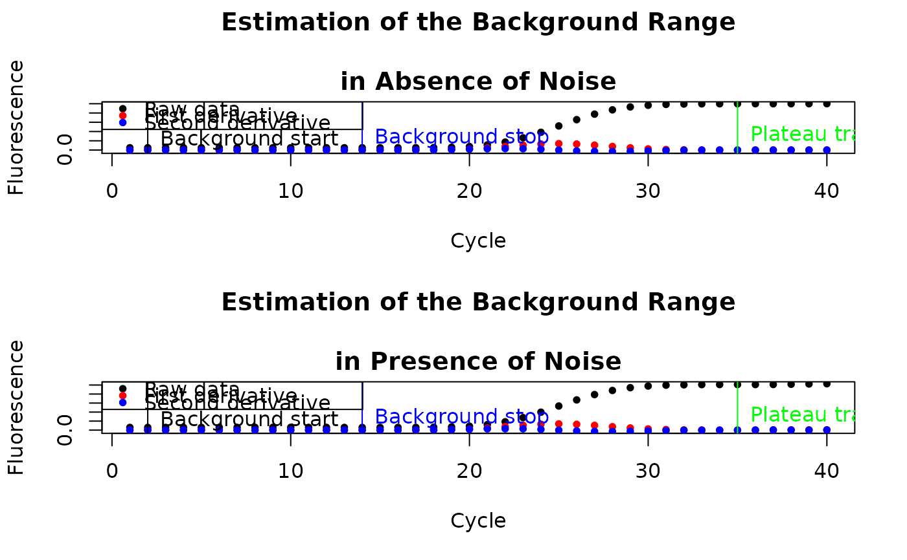

<!-- Generated by pkgdown: do not edit by hand -->
<!DOCTYPE html>
<html lang="en">
  <head>
  <meta charset="utf-8">
<meta http-equiv="X-UA-Compatible" content="IE=edge">
<meta name="viewport" content="width=device-width, initial-scale=1.0">

<title>Simple function to detect and correct the background range — bg.max • chipPCR</title>


<!-- jquery -->
<script src="https://cdnjs.cloudflare.com/ajax/libs/jquery/3.4.1/jquery.min.js" integrity="sha256-CSXorXvZcTkaix6Yvo6HppcZGetbYMGWSFlBw8HfCJo=" crossorigin="anonymous"></script>
<!-- Bootstrap -->

<link rel="stylesheet" href="https://cdnjs.cloudflare.com/ajax/libs/twitter-bootstrap/3.4.1/css/bootstrap.min.css" integrity="sha256-bZLfwXAP04zRMK2BjiO8iu9pf4FbLqX6zitd+tIvLhE=" crossorigin="anonymous" />

<script src="https://cdnjs.cloudflare.com/ajax/libs/twitter-bootstrap/3.4.1/js/bootstrap.min.js" integrity="sha256-nuL8/2cJ5NDSSwnKD8VqreErSWHtnEP9E7AySL+1ev4=" crossorigin="anonymous"></script>

<!-- bootstrap-toc -->
<link rel="stylesheet" href="../bootstrap-toc.css">
<script src="../bootstrap-toc.js"></script>

<!-- Font Awesome icons -->
<link rel="stylesheet" href="https://cdnjs.cloudflare.com/ajax/libs/font-awesome/5.12.1/css/all.min.css" integrity="sha256-mmgLkCYLUQbXn0B1SRqzHar6dCnv9oZFPEC1g1cwlkk=" crossorigin="anonymous" />
<link rel="stylesheet" href="https://cdnjs.cloudflare.com/ajax/libs/font-awesome/5.12.1/css/v4-shims.min.css" integrity="sha256-wZjR52fzng1pJHwx4aV2AO3yyTOXrcDW7jBpJtTwVxw=" crossorigin="anonymous" />

<!-- clipboard.js -->
<script src="https://cdnjs.cloudflare.com/ajax/libs/clipboard.js/2.0.6/clipboard.min.js" integrity="sha256-inc5kl9MA1hkeYUt+EC3BhlIgyp/2jDIyBLS6k3UxPI=" crossorigin="anonymous"></script>

<!-- headroom.js -->
<script src="https://cdnjs.cloudflare.com/ajax/libs/headroom/0.11.0/headroom.min.js" integrity="sha256-AsUX4SJE1+yuDu5+mAVzJbuYNPHj/WroHuZ8Ir/CkE0=" crossorigin="anonymous"></script>
<script src="https://cdnjs.cloudflare.com/ajax/libs/headroom/0.11.0/jQuery.headroom.min.js" integrity="sha256-ZX/yNShbjqsohH1k95liqY9Gd8uOiE1S4vZc+9KQ1K4=" crossorigin="anonymous"></script>

<!-- pkgdown -->
<link href="../pkgdown.css" rel="stylesheet">
<script src="../pkgdown.js"></script>


<meta property="og:title" content="Simple function to detect and correct the background range — bg.max" />
<meta property="og:description" content="bg.max detects and corrects background noise. 
The detection is made without any assumptions 
regarding the model of this function." />


<!-- mathjax -->
<script src="https://cdnjs.cloudflare.com/ajax/libs/mathjax/2.7.5/MathJax.js" integrity="sha256-nvJJv9wWKEm88qvoQl9ekL2J+k/RWIsaSScxxlsrv8k=" crossorigin="anonymous"></script>
<script src="https://cdnjs.cloudflare.com/ajax/libs/mathjax/2.7.5/config/TeX-AMS-MML_HTMLorMML.js" integrity="sha256-84DKXVJXs0/F8OTMzX4UR909+jtl4G7SPypPavF+GfA=" crossorigin="anonymous"></script>

<!--[if lt IE 9]>
<script src="https://oss.maxcdn.com/html5shiv/3.7.3/html5shiv.min.js"></script>
<script src="https://oss.maxcdn.com/respond/1.4.2/respond.min.js"></script>
<![endif]-->


  </head>

  <body data-spy="scroll" data-target="#toc">
    <div class="container template-reference-topic">
      <header>
      <div class="navbar navbar-default navbar-fixed-top" role="navigation">
  <div class="container">
    <div class="navbar-header">
      <button type="button" class="navbar-toggle collapsed" data-toggle="collapse" data-target="#navbar" aria-expanded="false">
        <span class="sr-only">Toggle navigation</span>
        <span class="icon-bar"></span>
        <span class="icon-bar"></span>
        <span class="icon-bar"></span>
      </button>
      <span class="navbar-brand">
        <a class="navbar-link" href="../index.html">chipPCR</a>
        <span class="version label label-default" data-toggle="tooltip" data-placement="bottom" title="Released version">1.0</span>
      </span>
    </div>

    <div id="navbar" class="navbar-collapse collapse">
      <ul class="nav navbar-nav">
        <li>
  <a href="../index.html">
    <span class="fas fa-home fa-lg"></span>
     
  </a>
</li>
<li>
  <a href="../articles/chipPCR.html">Get started</a>
</li>
<li>
  <a href="../reference/index.html">Reference</a>
</li>
      </ul>
      <ul class="nav navbar-nav navbar-right">
        <li>
  <a href="https://github.com/PCRuniversum/chipPCR/">
    <span class="fab fa-github fa-lg"></span>
     
  </a>
</li>
      </ul>
      
    </div><!--/.nav-collapse -->
  </div><!--/.container -->
</div><!--/.navbar -->

      

      </header>

<div class="row">
  <div class="col-md-9 contents">
    <div class="page-header">
    <h1>Simple function to detect and correct the background range</h1>
    
    <div class="hidden name"><code>bg.max.Rd</code></div>
    </div>

    <div class="ref-description">
    <p><code>bg.max</code> detects and corrects background noise. 
The detection is made without any assumptions 
regarding the model of this function.</p>
    </div>

    <pre class="usage"><span class='co'># S4 method for numeric,numeric</span>
<span class='fu'>bg.max</span><span class='op'>(</span><span class='va'>x</span>, <span class='va'>y</span>, bg.corr <span class='op'>=</span> <span class='fl'>1.3</span>, bg.start <span class='op'>=</span> <span class='fl'>2</span>, 
      inder.approx <span class='op'>=</span> <span class='cn'>TRUE</span><span class='op'>)</span>

<span class='co'># S4 method for matrix,missing</span>
<span class='fu'>bg.max</span><span class='op'>(</span><span class='va'>x</span>, <span class='va'>y</span>, bg.corr <span class='op'>=</span> <span class='fl'>1.3</span>, bg.start <span class='op'>=</span> <span class='fl'>2</span>, 
      inder.approx <span class='op'>=</span> <span class='cn'>TRUE</span><span class='op'>)</span>

<span class='co'># S4 method for data.frame,missing</span>
<span class='fu'>bg.max</span><span class='op'>(</span><span class='va'>x</span>, <span class='va'>y</span>, bg.corr <span class='op'>=</span> <span class='fl'>1.3</span>, bg.start <span class='op'>=</span> <span class='fl'>2</span>, 
      inder.approx <span class='op'>=</span> <span class='cn'>TRUE</span><span class='op'>)</span></pre>

    <h2 class="hasAnchor" id="arguments"><a class="anchor" href="#arguments"></a>Arguments</h2>
    <table class="ref-arguments">
    <colgroup><col class="name" /><col class="desc" /></colgroup>
    <tr>
      <th>x</th>
      <td><p>is a vector containing the time or cycle values or data frame/matrix 
containing cycle in the first column and fluorescence values in the second 
column.</p></td>
    </tr>
    <tr>
      <th>y</th>
      <td><p>is a vector containing the fluorescence values. Used only if <code>x</code> 
is also a vector.</p></td>
    </tr>
    <tr>
      <th>bg.corr</th>
      <td><p>a value which helps to tweak on the suggested background value of 
    <code>bg.max</code>.</p></td>
    </tr>
    <tr>
      <th>bg.start</th>
      <td><p>a user defined value for the start of the background range.</p></td>
    </tr>
    <tr>
      <th>inder.approx</th>
      <td><p>a <code>logical</code> value defining if data should be numerically derived 
by <code><a href='inder.html'>inder</a></code> function. If <code>FALSE</code>, derivatives are calculated by the
<code><a href='https://rdrr.io/r/stats/predict.smooth.spline.html'>predict.smooth.spline</a></code>.</p></td>
    </tr>
    </table>

    <h2 class="hasAnchor" id="details"><a class="anchor" href="#details"></a>Details</h2>

    <p>Background range herein refers to a level of fluorescence measured before 
any specific amplification is detectable. The raw data (e.g., fluorescence 
intensity) measured after each step (cycle or time point) follow a 
non-linear progress. The background is assumed to be constant for the 
entire measurement. The algorithm of <code>bg.max</code> is based 
on the assumption that during the linear ground phase the signal difference 
of successive cycles is approximately constant. After transition to the 
early exponential phase the signal changes drastically. First data are 
smoothed by Friedman's 'super smoother' (as found in 
<code><a href='https://rdrr.io/r/stats/supsmu.html'>supsmu</a></code>. Thereof the approximate first and second 
derivative are calculated by a five-point stencil 
<code><a href='inder.html'>inder</a></code>.</p>
<p>The difference of cycles at the maxima of the first and second approximate 
derivative as well as a correction factor are used to estimate the range before 
the exponential phase. This function finds the background range 
without modeling the relationship between signal and cycle number. The start of 
the background range is defined be a fixed value. Since many signals tend to 
overshot in the first cycles a default value of 3 is chosen. 
<code>bg.max</code> tries also to estimate the end of an amplification 
reaction.</p>
    <h2 class="hasAnchor" id="value"><a class="anchor" href="#value"></a>Value</h2>

    <p>An object of <code><a href='bg.html'>bg</a></code> class containing predicted background range as well
as other parameters.</p>
    <h2 class="hasAnchor" id="author"><a class="anchor" href="#author"></a>Author</h2>

    <p>Stefan Roediger, Michal Burdukiewicz</p>
    <h2 class="hasAnchor" id="references"><a class="anchor" href="#references"></a>References</h2>

    <p>D. N. Frank. BARCRAWL and BARTAB: software tools for the design and 
implementation of barcoded primers for highly multiplexed DNA sequencing. 
<em>BMC Bioinformatics</em>, 10:362, 2009. ISSN 1471-2105. doi: 
10.1186/1471-2105-10-362. PMID: 19874596 PMCID: PMC2777893.</p>
<p>S. N. Peirson, J. N. Butler, and R. G. Foster. Experimental validation of 
novel and conventional approaches to quantitative real-time PCR data 
analysis. <em>Nucleic Acids Research</em>, 31(14):e73, July 2003. ISSN 
1362-4962. PMID: 12853650 PMCID: PMC167648.</p>
<p>X. Rao, D. Lai, and X. Huang. A new method for quantitative real-time 
polymerase chain reaction data analysis. <em>Journal of computational 
biology: a journal of computational molecular cell biology</em>, 
20(9):703--711, Sept. 2013. ISSN 1557-8666. doi: 10.1089/cmb.2012.0279. 
PMID: 23841653 PMCID: PMC3762066.</p>
<p>A. Tichopad, M. Dilger, G. Schwarz, and M. W. Pfaffl. Standardized 
determination of real-time PCR efficiency from a single reaction set-up. 
<em>Nucleic Acids Research</em>, 31(20):e122, Oct. 2003. ISSN 1362-4962. 
PMID: 14530455 PMCID: PMC219490.</p>
<p>J. Wilhelm, A. Pingoud, and M. Hahn. Real-time PCR-based method for the 
estimation of genome sizes. <em>Nucleic Acids Research</em>, 31(10):e56, May 
2003. ISSN 0305-1048. PMID: 12736322 PMCID: PMC156059.</p>
<p>S. Zhao and R. D. Fernald. Comprehensive algorithm for quantitative 
real-time polymerase chain reaction. <em>Journal of computational 
biology: a journal of computational molecular cell biology</em>, 12(8): 
1047--1064, Oct. 2005. ISSN 1066-5277. doi:10.1089/cmb.2005.12.1047. PMID: 16241897 PMCID: PMC2716216.</p>

    <h2 class="hasAnchor" id="examples"><a class="anchor" href="#examples"></a>Examples</h2>
    <pre class="examples"><div class='input'><span class='co'># First example: Test for the background of an amplification reaction.</span>
<span class='fu'><a href='https://rdrr.io/r/graphics/par.html'>par</a></span><span class='op'>(</span>mfrow <span class='op'>=</span> <span class='fu'><a href='https://rdrr.io/r/base/c.html'>c</a></span><span class='op'>(</span><span class='fl'>2</span>,<span class='fl'>1</span><span class='op'>)</span><span class='op'>)</span>
<span class='va'>res</span> <span class='op'>&lt;-</span> <span class='fu'><a href='AmpSim.html'>AmpSim</a></span><span class='op'>(</span>cyc <span class='op'>=</span> <span class='fl'>1</span><span class='op'>:</span><span class='fl'>40</span>, Cq <span class='op'>=</span> <span class='fl'>25</span><span class='op'>)</span>
<span class='va'>background</span> <span class='op'>&lt;-</span> <span class='fu'>bg.max</span><span class='op'>(</span><span class='va'>res</span><span class='op'>)</span>
<span class='fu'><a href='https://rdrr.io/r/graphics/plot.default.html'>plot</a></span><span class='op'>(</span><span class='va'>background</span>, main <span class='op'>=</span> <span class='st'>"Estimation of the Background Range\n
in Absence of Noise"</span><span class='op'>)</span>
</div><div class='output co'>#&gt; Failed to get face: ِF!, 0</div><div class='input'><span class='va'>res.noise</span> <span class='op'>&lt;-</span> <span class='fu'><a href='AmpSim.html'>AmpSim</a></span><span class='op'>(</span>cyc <span class='op'>=</span> <span class='fl'>1</span><span class='op'>:</span><span class='fl'>40</span>, Cq <span class='op'>=</span> <span class='fl'>25</span>, noise <span class='op'>=</span> <span class='cn'>TRUE</span><span class='op'>)</span>
<span class='va'>background.noise</span> <span class='op'>&lt;-</span> <span class='fu'>bg.max</span><span class='op'>(</span><span class='va'>res.noise</span><span class='op'>)</span>
<span class='fu'><a href='https://rdrr.io/r/graphics/plot.default.html'>plot</a></span><span class='op'>(</span><span class='va'>background.noise</span>, main <span class='op'>=</span> <span class='st'>"Estimation of the Background Range\n
in Presence of Noise"</span><span class='op'>)</span>
</div><div class='img'></div><div class='input'><span class='fu'><a href='https://rdrr.io/r/graphics/par.html'>par</a></span><span class='op'>(</span>mfrow <span class='op'>=</span> <span class='fu'><a href='https://rdrr.io/r/base/c.html'>c</a></span><span class='op'>(</span><span class='fl'>1</span>,<span class='fl'>1</span><span class='op'>)</span><span class='op'>)</span>


<span class='co'># Second example: A simple function to test for a background range.</span>
<span class='co'># Data were taken form the chipPCR C17 data set.</span>
<span class='co'># Note that the not the time but the "cycle number" was</span>
<span class='co'># used to calculate the background range.</span>
<span class='fu'><a href='https://rdrr.io/r/utils/data.html'>data</a></span><span class='op'>(</span><span class='va'>C17</span><span class='op'>)</span>
<span class='fu'><a href='https://rdrr.io/r/graphics/plot.default.html'>plot</a></span><span class='op'>(</span><span class='va'>C17</span><span class='op'>[</span>, <span class='fl'>2</span><span class='op'>]</span>, <span class='va'>C17</span><span class='op'>[</span>,  <span class='fl'>3</span><span class='op'>]</span>, xlab <span class='op'>=</span> <span class='st'>"Cycle"</span>, ylab <span class='op'>=</span> <span class='st'>"RFU"</span>, 
     main <span class='op'>=</span> <span class='st'>"Estimate the begin of the Amplification\n of a HDA"</span>, 
     pch <span class='op'>=</span> <span class='fl'>20</span><span class='op'>)</span>
</div><div class='input'><span class='va'>res</span> <span class='op'>&lt;-</span> <span class='fu'>bg.max</span><span class='op'>(</span><span class='va'>C17</span><span class='op'>[</span>, <span class='fl'>2</span><span class='op'>:</span><span class='fl'>3</span><span class='op'>]</span>, bg.corr <span class='op'>=</span> <span class='fl'>1.4</span>, bg.start <span class='op'>=</span> <span class='fl'>1</span><span class='op'>)</span>
<span class='fu'><a href='https://rdrr.io/r/graphics/abline.html'>abline</a></span><span class='op'>(</span>v <span class='op'>=</span> <span class='fu'><a href='https://rdrr.io/r/base/c.html'>c</a></span><span class='op'>(</span><span class='fu'>slot</span><span class='op'>(</span><span class='va'>res</span>, <span class='st'>"bg.start"</span><span class='op'>)</span>, <span class='fu'>slot</span><span class='op'>(</span><span class='va'>res</span>, <span class='st'>"bg.stop"</span><span class='op'>)</span><span class='op'>)</span>, 
       col <span class='op'>=</span> <span class='fu'><a href='https://rdrr.io/r/base/c.html'>c</a></span><span class='op'>(</span><span class='fl'>1</span>,<span class='fl'>2</span><span class='op'>)</span><span class='op'>)</span>
</div><div class='input'><span class='fu'><a href='https://rdrr.io/r/graphics/abline.html'>abline</a></span><span class='op'>(</span>h <span class='op'>=</span> <span class='fu'>slot</span><span class='op'>(</span><span class='va'>res</span>, <span class='st'>"fluo"</span><span class='op'>)</span>, col <span class='op'>=</span> <span class='st'>"blue"</span><span class='op'>)</span>
</div><div class='img'></div><div class='input'>
<span class='co'># Third example: Test for the background of an amplification reaction.</span>
<span class='co'># Simulate amplification curves with different quantification points</span>
<span class='co'># within 40 cycles.</span>
<span class='va'>cyc</span> <span class='op'>&lt;-</span> <span class='fu'><a href='https://rdrr.io/r/base/seq.html'>seq</a></span><span class='op'>(</span><span class='fl'>1</span>, <span class='fl'>40</span>, <span class='fl'>1</span><span class='op'>)</span>

<span class='co'># Use a five parameter model to simulate amplification curves</span>
<span class='va'>b</span> <span class='op'>&lt;-</span> <span class='op'>-</span><span class='fl'>15</span>; <span class='va'>c</span> <span class='op'>&lt;-</span> <span class='fl'>0.02</span>; <span class='va'>d</span> <span class='op'>&lt;-</span> <span class='fl'>1</span>
<span class='co'># Define the different quantification points with a difference of</span>
<span class='co'># circa 3.32 cycles</span>
<span class='va'>e</span> <span class='op'>&lt;-</span> <span class='fu'><a href='https://rdrr.io/r/base/seq.html'>seq</a></span><span class='op'>(</span><span class='fl'>21</span>, <span class='fl'>35</span>, <span class='fl'>3.32</span><span class='op'>)</span>

<span class='co'># Plot the amplification curves and the estimated background ranges.</span>
<span class='fu'><a href='https://rdrr.io/r/graphics/plot.default.html'>plot</a></span><span class='op'>(</span><span class='cn'>NA</span>, <span class='cn'>NA</span>, xlim <span class='op'>=</span> <span class='fu'><a href='https://rdrr.io/r/base/c.html'>c</a></span><span class='op'>(</span><span class='fl'>1</span>, <span class='fl'>40</span><span class='op'>)</span>, ylim <span class='op'>=</span> <span class='fu'><a href='https://rdrr.io/r/base/c.html'>c</a></span><span class='op'>(</span><span class='fl'>0</span>, <span class='fl'>1</span><span class='op'>)</span>, xlab <span class='op'>=</span> <span class='st'>"Cycles"</span>, 
     ylab <span class='op'>=</span> <span class='st'>"Fluorescence"</span><span class='op'>)</span>
</div><div class='input'>     
<span class='kw'>for</span> <span class='op'>(</span><span class='va'>i</span> <span class='kw'>in</span> <span class='fl'>1</span><span class='op'>:</span><span class='fu'><a href='https://rdrr.io/r/base/length.html'>length</a></span><span class='op'>(</span><span class='va'>e</span><span class='op'>)</span><span class='op'>)</span> <span class='op'>{</span>
  <span class='va'>fluo</span> <span class='op'>&lt;-</span> <span class='va'>c</span> <span class='op'>+</span> <span class='op'>(</span><span class='va'>d</span> <span class='op'>-</span> <span class='va'>c</span><span class='op'>)</span><span class='op'>/</span><span class='op'>(</span><span class='fl'>1</span> <span class='op'>+</span> <span class='fu'><a href='https://rdrr.io/r/base/Log.html'>exp</a></span><span class='op'>(</span><span class='va'>b</span> <span class='op'>*</span> <span class='op'>(</span><span class='fu'><a href='https://rdrr.io/r/base/Log.html'>log</a></span><span class='op'>(</span><span class='va'>cyc</span><span class='op'>)</span> <span class='op'>-</span> <span class='fu'><a href='https://rdrr.io/r/base/Log.html'>log</a></span><span class='op'>(</span><span class='va'>e</span><span class='op'>[</span><span class='va'>i</span><span class='op'>]</span><span class='op'>)</span><span class='op'>)</span><span class='op'>)</span><span class='op'>)</span>
  <span class='fu'><a href='https://rdrr.io/r/graphics/points.html'>points</a></span><span class='op'>(</span><span class='va'>cyc</span>, <span class='va'>fluo</span>, type <span class='op'>=</span> <span class='st'>"b"</span>, col <span class='op'>=</span> <span class='va'>i</span>, pch <span class='op'>=</span> <span class='fl'>20</span><span class='op'>)</span>
  <span class='va'>res</span> <span class='op'>&lt;-</span> <span class='fu'>bg.max</span><span class='op'>(</span><span class='va'>cyc</span>, <span class='va'>fluo</span>, bg.corr <span class='op'>=</span> <span class='fl'>1.4</span>, bg.start <span class='op'>=</span> <span class='fl'>1</span><span class='op'>)</span>
  <span class='fu'><a href='https://rdrr.io/r/graphics/abline.html'>abline</a></span><span class='op'>(</span>v <span class='op'>=</span> <span class='fu'>slot</span><span class='op'>(</span><span class='va'>res</span>, <span class='st'>"bg.stop"</span><span class='op'>)</span>, col <span class='op'>=</span> <span class='va'>i</span><span class='op'>)</span>
  <span class='fu'><a href='https://rdrr.io/r/graphics/abline.html'>abline</a></span><span class='op'>(</span>h <span class='op'>=</span> <span class='fu'>slot</span><span class='op'>(</span><span class='va'>res</span>, <span class='st'>"fluo"</span><span class='op'>)</span>, col <span class='op'>=</span> <span class='va'>i</span><span class='op'>)</span>
<span class='op'>}</span>
</div><div class='img'></div></pre>
  </div>
  <div class="col-md-3 hidden-xs hidden-sm" id="pkgdown-sidebar">
    <nav id="toc" data-toggle="toc" class="sticky-top">
      <h2 data-toc-skip>Contents</h2>
    </nav>
  </div>
</div>


      <footer>
      <div class="copyright">
  <p>Developed by Stefan Roediger, Michal Burdukiewicz.</p>
</div>

<div class="pkgdown">
  <p>Site built with <a href="https://pkgdown.r-lib.org/">pkgdown</a> 1.6.1.</p>
</div>

      </footer>
   </div>

  


  </body>
</html>


